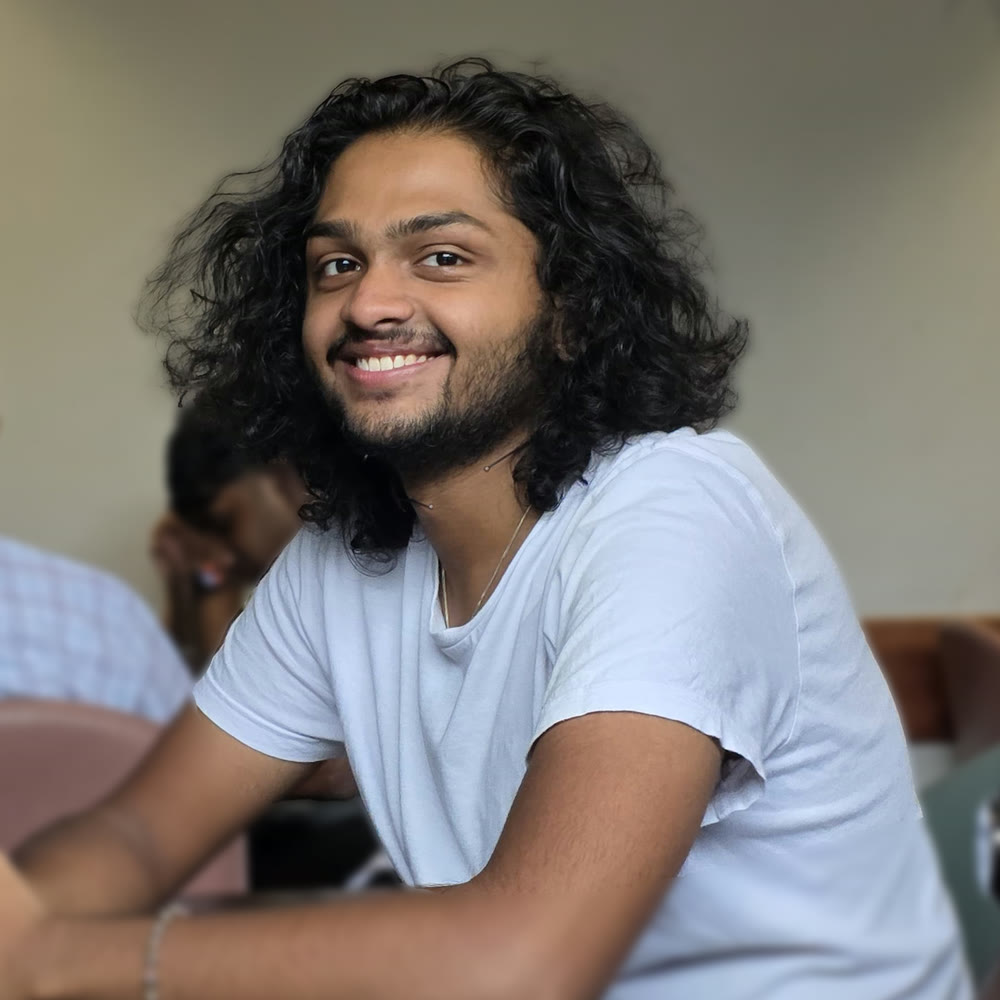

About

I'm a Design student, illustrator and an aspiring visual story teller who wants to work with illustration and design to tell stories with the worlds and characters I create.
I am a Communication Design Student, so I am always finding and learning new ways to create work that engages the viewer, making them put a piece of themselves in my work whenever they interact with it.
I am constantly looking to improving my approach and work in design, through experimentation, consuming new human made media that inspire me and doing work that challenge my current status as a designer.
Say hello
Find me at adithyansathyanarayanan@gmail.com or on LinkedIn, Behance, and Instagram.